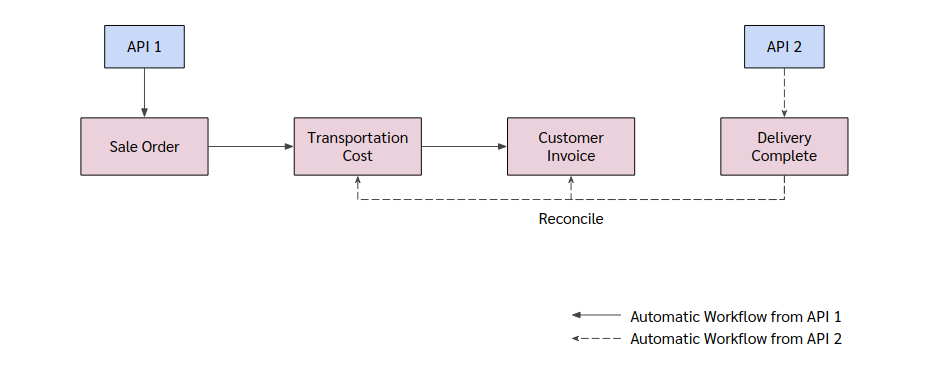
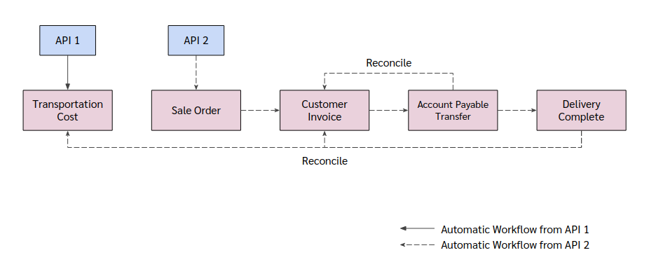
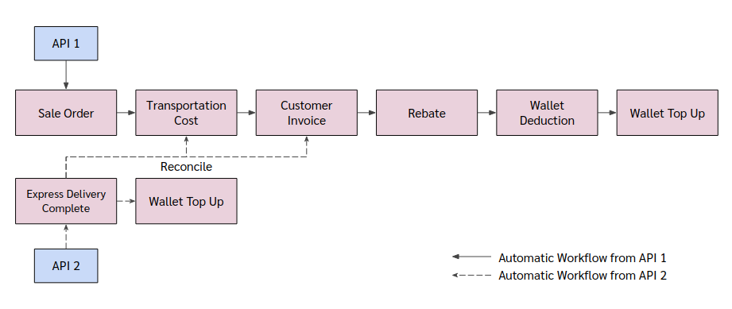

> Automatic Workflow
- eCommerce
- eCommerce Standard
- eCommerce Consignment
- eCommerce Consignment Fix GP
- eCommerce Consignment Var GP
- Express
eCommerce
Automatic Flow ของ eCommerce แบ่งตามการยิง APIs ออกเป็น 2 Flow ดังนี้
- eCommerce Standard
- eCommerce Consignment
eCommerce Standard

eCommerce Standard
API 1 จะยิงเข้าระบบ Odoo ทาง Sale Order (sale.order)
และหลังจากที่ API 1 ถูกยิงเข้ามา ในระบบจะเกิดกระบวนการอัตโนมัติ ดังนี้
- สร้าง Sale Order
- คำนวณรายได้ต่างๆแล้วเพิ่มเข้าไปใน Sale Order
- ยืนยัน Sale Order
- สร้าง Delivery Order เพื่อบันทึกการส่งสินค้า (ตอนนี้ไม่ได้ใช้)
- สร้าง Journal Entry เพื่อบันทึกประมาณการค่าขนส่ง (TC)
- สร้าง Customer Invoice เพื่อบันทึกรายได้ ภาษี(ถ้ามี) และลูกหนี้การค้า
eCommerce Standard
API 2 จะยิงเข้าระบบ Odoo ทาง Delivery Complete (sunteen.delivery.complete)
และหลังจากที่ API 2 ถูกยิงเข้ามา ในระบบจะเกิดกระบวนการอัตโนมัติ ดังนี้
- สร้าง Journal Entry เพื่อบันทึกต้นทุนค่าบริการ ส่วนแบ่งค่านายหน้า และเจ้าหนี้การค้า (DC)
- กลับลูกหนี้จาก Customer เป็น Payment Provider
- กลับประมาณการค่าขนส่ง
eCommerce Consignment
eCommerce Consignment สามารถแบ่งตามวิธีการคำนวณรายได้ ออกเป็น 2 รูปแบบ ดังนี้
- eCommerce Consignment Fix GP
- eCommerce Consignment Var GP
ถึงแม้ว่า eCommerce Consignment จะมีการคำนวณรายได้ 2 รูปแบบ แต่การยิง APIs เข้าระบบ Odoo ของ
eCommerce Consignment Fix GP และ eCommerce Consignment Var GP เหมือนกัน

eCommerce Consignment
API 1 จะยิงเข้าระบบ Odoo ทาง Transportation Cost (sunteen.record.transportation.cost)
และหลังจากที่ API 1 ถูกยิงเข้ามา ในระบบจะเกิดกระบวนการอัตโนมัติ ดังนี้
- สร้าง Journal Entry เพื่อบันทึกประมาณการค่าขนส่ง (TC)
API 2 จะยิงเข้าระบบ Odoo ทาง Sale Order (sale.order)
และหลังจากที่ API 2 ถูกยิงเข้ามา ในระบบจะเกิดกระบวนการอัตโนมัติ ดังนี้
eCommerce Consignment
- สร้าง Sale Order
- คำนวณรายได้ต่างๆแล้วเพิ่มเข้าไปใน Sale Order
- ยืนยัน Sale Order
- สร้าง Delivery Order เพื่อบันทึกการส่งสินค้า (ตอนนี้ไม่ได้ใช้)
- สร้าง Customer Invoice เพื่อบันทึกรายได้ ภาษี(ถ้ามี) และลูกหนี้การค้า
- สร้าง Journal Entry เพื่อบันทึกเจ้าหนี้ฝากขาย โดยการกลับเจ้าหนี้พักมาเป็นเจ้าหนี้ฝากขาย (APT)
- สร้าง Journal Entry เพื่อบันทึกต้นทุนค่าบริการ ส่วนแบ่งค่านายหน้า และเจ้าหนี้การค้า (DC)
- กลับลูกหนี้จาก Customer เป็น Payment Provider
- กลับประมาณการค่าขนส่ง
Express

Express
API 1 จะยิงเข้าระบบ Odoo ทาง Sale Order (sale.order)
และหลังจากที่ API 1 ถูกยิงเข้ามา ในระบบจะเกิดกระบวนการอัตโนมัติ ดังนี้
- สร้างและยืนยัน Sale Order
- สร้าง Delivery Order เพื่อบันทึกการส่งสินค้า (ตอนนี้ไม่ได้ใช้)
- สร้าง Journal Entry เพื่อบันทึกประมาณการค่าขนส่ง (TC)
- สร้าง Customer Invoice เพื่อบันทึกรายได้ ภาษี(ถ้ามี) และลูกหนี้การค้า
- สร้าง Journal Entry เพื่อบันทึกค่า Rebate เมื่อ Agent ส่งสินค้ากับ 945 (REBATE)
- สร้าง Journal Entry เพื่อหักเงินออกจาก Wallet (WD)
- สร้าง Journal Entry เพื่อเติมเงินคืนใน Wallet (WT)
Express
API 2 จะยิงเข้าระบบ Odoo ทาง Express Delivery Complete (sunteen.express.delivery.complete)
และหลังจากที่ API 2 ถูกยิงเข้ามา ในระบบจะเกิดกระบวนการอัตโนมัติ ดังนี้
- สร้าง Journal Entry เพื่อบันทึกรายได้จากการบริการเก็บเงินปลายทาง ต้นทุนค่าบริการ และเจ้าหนี้การค้า (DC)
- กลับประมาณการค่าขนส่ง
- สร้าง Journal Entry เพื่อเติมเงินคืนใน Wallet (WT)